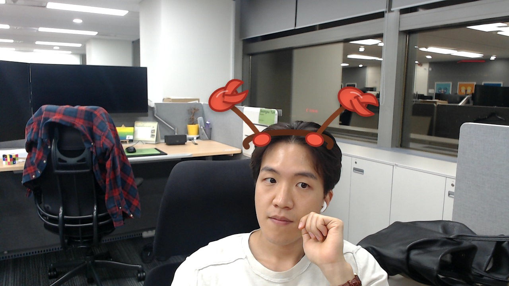

JENSEN HUANG
NVIDIA CEO
MOTTOMAKE WORLD FASTER WITH GPUS
JENSEN HUANG — NVIDIA CEO, accelerated computing builder
About me
I lead NVIDIA as CEO, building accelerated computing platforms that help developers, researchers, and companies make the world faster with GPUs.
What I do
AI-written bio
NVIDIA CEO로서 개발자, 연구자, 기업이 GPU 기반 가속 컴퓨팅 플랫폼으로 더 빠르게 혁신하도록 이끈다. 사진은 사무실 환경에서 편안한 흰색 상의와 이어버드, 정면을 향한 안정적인 프레이밍으로 개인 GitHub 스타일 홈페이지에 어울리는 실용적인 인상을 준다.
AI first impression
차분한 표정과 손을 턱 옆에 둔 포즈가 집중적이고 친근한 개발자 블로그 분위기를 만든다.